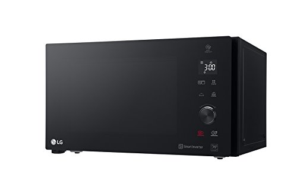
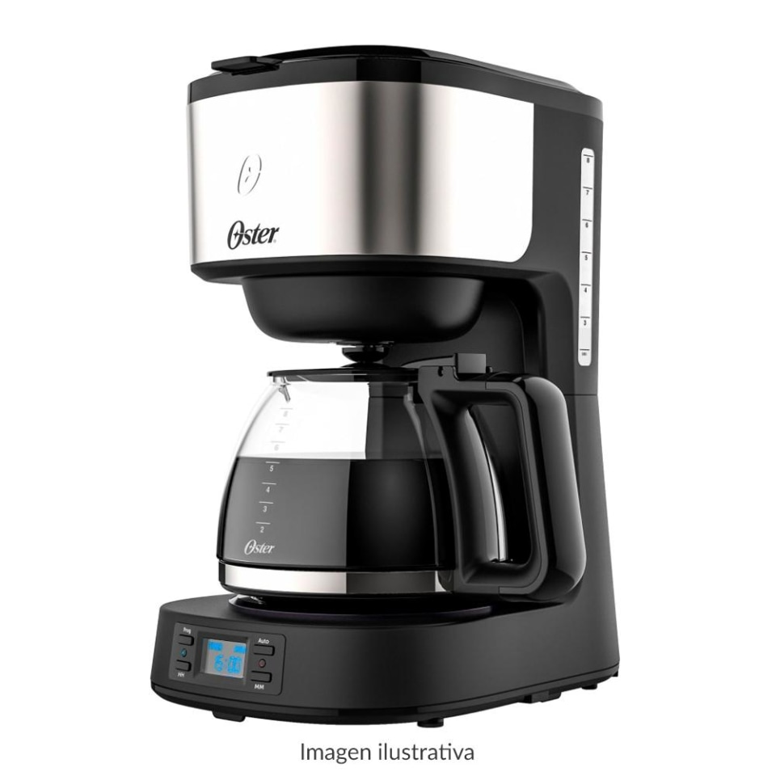
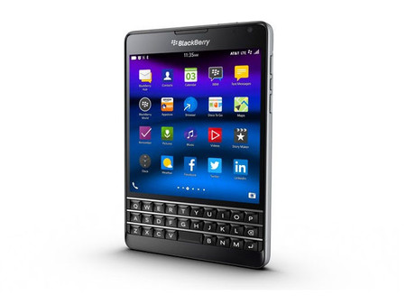
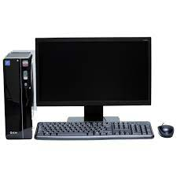

Practicas trabajos

Microondas

Descripcion: Producto domestico que sirve para calentar comidas
Precio: $1,290
Cafetera

Descripcion: Para crear y saborear un cafe hecho en casa con el amor de la familia
Precio: $352,000
Celular

Descripcion: Uso practico para el trabajo y para los deberes de la escuela, tambien facilidad
a la comunicacion
Precio: $4,000
Computadora

Descripcion: Maquina para el trabajo e informes escolar, cuenta con una ram y un software de alta gama
Precio: $8,934